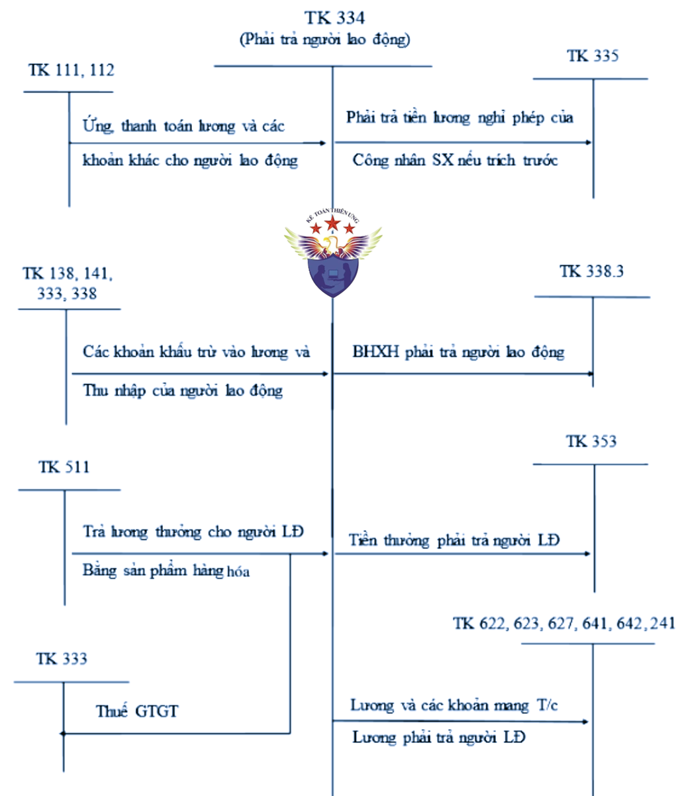
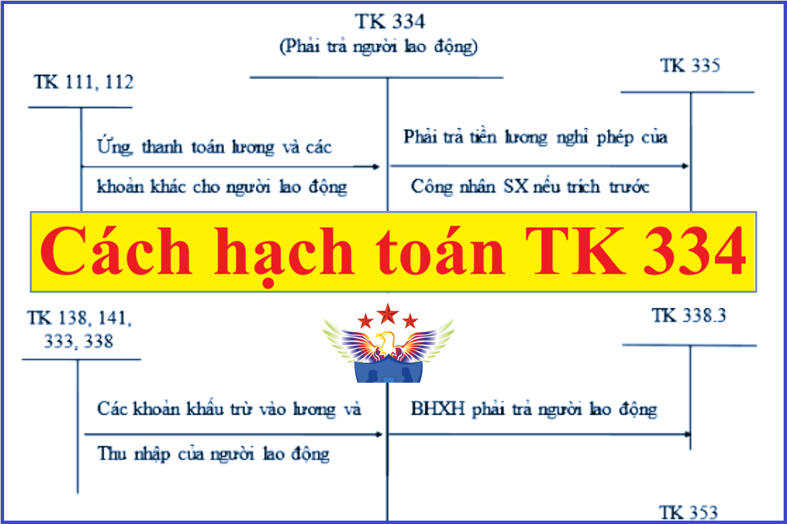

Hướng dẫn cách hạch toán phải trả người lao động - Tài khoản 334 áp dụng chế độ kế toán theo Thông tư 99/2025/TT-BTC mới nhất 2026, hạch toán tiền lương, tiền công, tiền thưởng, bảo hiểm xã hội, thuế thu nhập cá nhân, ứng trước tiền lương và các khoản phải trả khác cho nhân viên.
1. Nguyên tắc kế toán Tài khoản 334 - Phải trả người lao động
- Tài khoản này dùng để phản ánh các khoản phải trả và tình hình thanh toán các khoản phải trả cho người lao động của doanh nghiệp về tiền lương, tiền công, tiền thưởng, bảo hiểm xã hội trả theo lương và các khoản phải trả khác thuộc về thu nhập của người lao động.
Sơ đồ chữ T hạch toán tài khoản 334

2. Kết cấu và nội dung Tài khoản 334
|
Bên Nợ |
Bên Có |
|
- Các khoản tiền lương, tiền công, tiền thưởng có tính chất lương, bảo hiểm xã hội trả theo lương và các khoản khác đã trả, đã chi, đã ứng trước cho người lao động; - Các khoản khấu trừ vào tiền lương, tiền công của người lao động. |
Các khoản tiền lương, tiền công, tiền thưởng có tính chất lương, bảo hiểm xã hội và các khoản khác phải trả, phải chi cho người lao động. |
|
Số dư bên Có: Các khoản tiền lương, tiền công, tiền thưởng có tính chất lương và các khoản khác còn phải trả cho người lao động tại thời điểm kết thúc kỳ kế toán. |
|
| Tài khoản 334 có thể có số dư bên Nợ. Số dư bên Nợ tài khoản 334 (nếu có) phản ánh số tiền đã trả lớn hơn số phải trả về tiền lương, tiền công, tiền thưởng và các khoản khác cho người lao động. | |
3. Cách hạch toán khoản phải trả người lao động một số nghiệp vụ:
|
1. Tính tiền lương, các khoản phụ cấp theo quy định phải trả cho người lao động, ghi: Nợ các TK 622, 623, 627, 641, 642, 241,... Có TK 334 - Phải trả người lao động. 2. Tiền thưởng phải trả cho người lao động: Nợ các TK 622, 623, 627, 641, 642, 241,... (nếu doanh nghiệp không có quỹ khen thưởng và tiền thưởng được tính vào chi phí sản xuất, kinh doanh) Nợ TK 353 - Quỹ khen thưởng, phúc lợi (3531) (nếu trích từ quỹ khen thưởng) Có TK 334 - Phải trả người lao động. - Khi xuất quỹ chi trả tiền thưởng, ghi: Nợ TK 334 - Phải trả người lao động Có các TK 111, 112,...
3. Tính tiền bảo hiểm xã hội (ốm đau, thai sản, tai nạn,...) phải trả cho người lao động, ghi: Nợ TK 338 - Phải trả, phải nộp khác (3383) Có TK 334 - Phải trả người lao động. 4. Tính tiền lương nghỉ phép thực tế phải trả cho người lao động, ghi: Nợ các TK 622, 623, 627, 641, 642, 241,... (nếu doanh nghiệp không trích trước tiền lương nghỉ phép) Nợ TK 335 - Chi phí phải trả (nếu doanh nghiệp trích trước tiền lương nghỉ phép) Có TK 334 - Phải trả người lao động.
5. Các khoản phải khấu trừ vào lương và thu nhập của người lao động của doanh nghiệp như tiền tạm ứng chưa chi hết, bảo hiểm y tế, bảo hiểm xã hội, bảo hiểm thất nghiệp, tiền thu bồi thường về tài sản thiếu theo quyết định xử lý,... ghi: Nợ TK 334 - Phải trả người lao động
Có các TK 138, 141, 338,... Xem thêm: Tỷ lệ trích các khoản bảo hiểm
6. Tính tiền thuế thu nhập cá nhân của người lao động của doanh nghiệp phải nộp Nhà nước, ghi: Nợ TK 334 - Phải trả người lao động
Có TK 333 - Thuế và các khoản phải nộp Nhà nước (3335). Xem thêm: Cách tính thuế thu nhập cá nhân 7. Khi ứng trước hoặc thực trả tiền lương, tiền công cho người lao động của doanh nghiệp, ghi: Nợ TK 334 - Phải trả người lao động Có các TK 111, 112,... 8. Thanh toán các khoản phải trả cho người lao động của doanh nghiệp, ghi: Nợ TK 334 - Phải trả người lao động Có các TK 111, 112,... 9. Trường hợp trả lương hoặc thưởng cho người lao động của doanh nghiệp bằng sản phẩm, hàng hóa, doanh nghiệp phản ánh doanh thu bán hàng không bao gồm thuế GTGT, ghi: Nợ TK 334 - Phải trả người lao động Có TK 511 - Doanh thu bán hàng và cung cấp dịch vụ Có TK 3331 - Thuế GTGT phải nộp (33311). 10. Xác định và thanh toán các khoản khác phải trả cho người lao động của doanh nghiệp như tiền ăn ca, tiền nhà, tiền điện thoại, học phí, thẻ hội viên,...: - Khi xác định được số phải trả cho người lao động của doanh nghiệp, ghi: Nợ các TK 622, 623, 627, 641, 642 Có TK 334 - Phải trả người lao động. - Khi chi trả cho người lao động của doanh nghiệp, ghi: Nợ TK 334 - Phải trả người lao động Có các TK 111, 112,... |
Kế toán Diệu Tâm là 1 đơn vị đào tạo kế toán thực tế hàng đầu tại Hà Nội: Dạy học thực hành kế toán trực tiếp trên chứng từ thực tế, dạy kê khai thuế, tính thuế - Quyết toán thuế, hoàn thiện sổ sách – Lập báo cáo tài chính thực tế, chuyến sâu…
---------------------------------------------------------------
